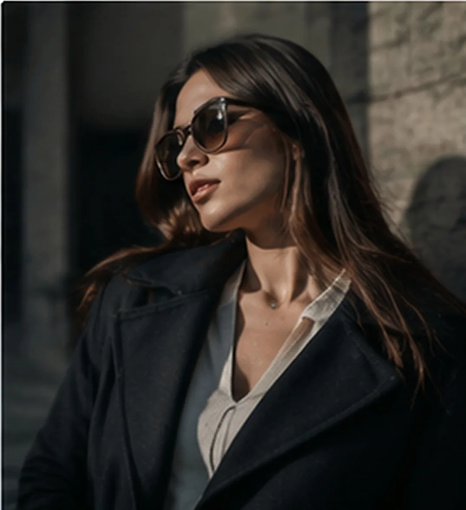
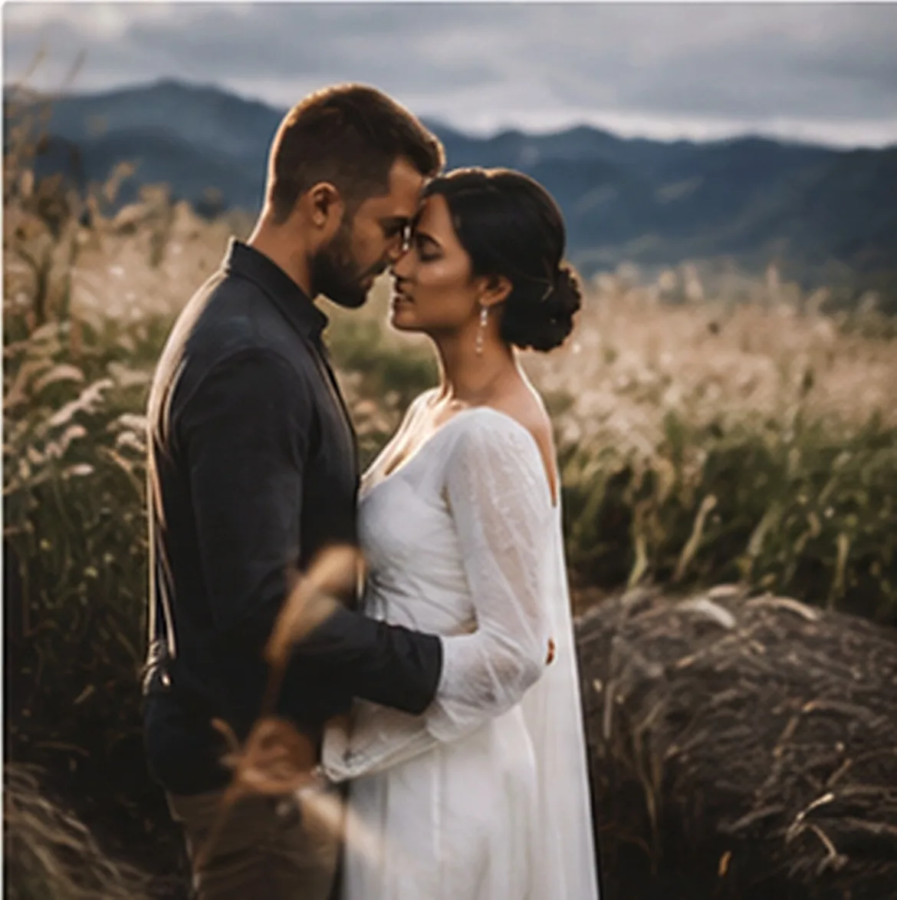
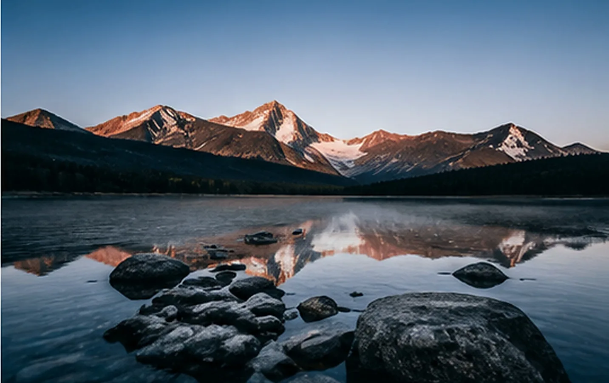
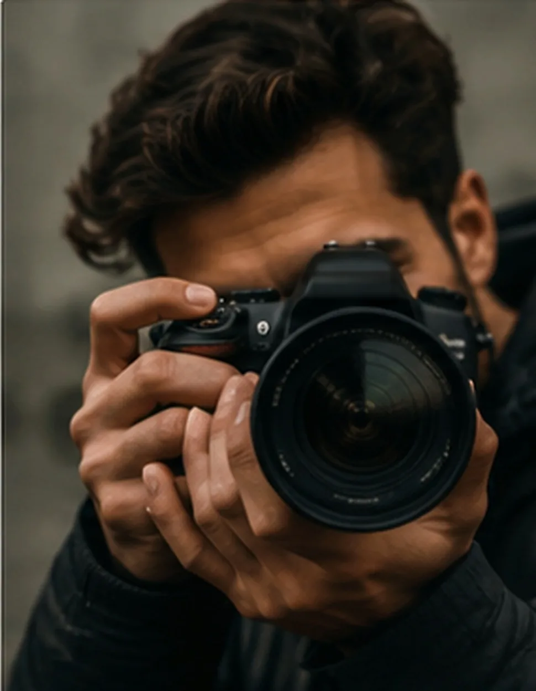
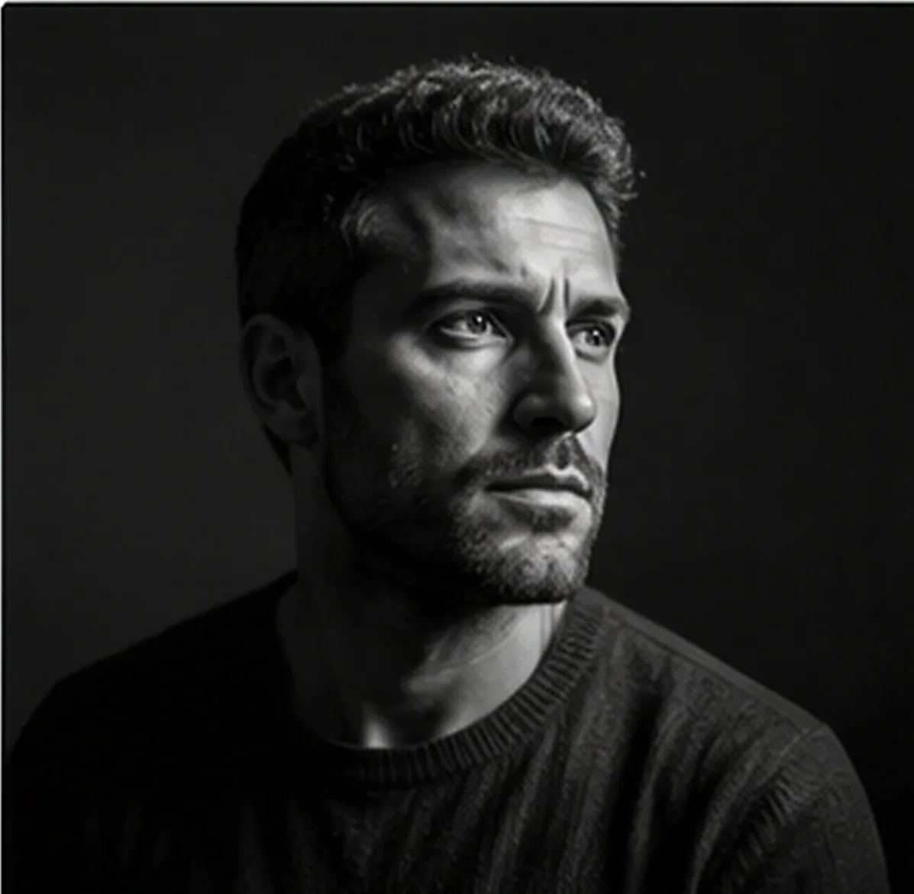
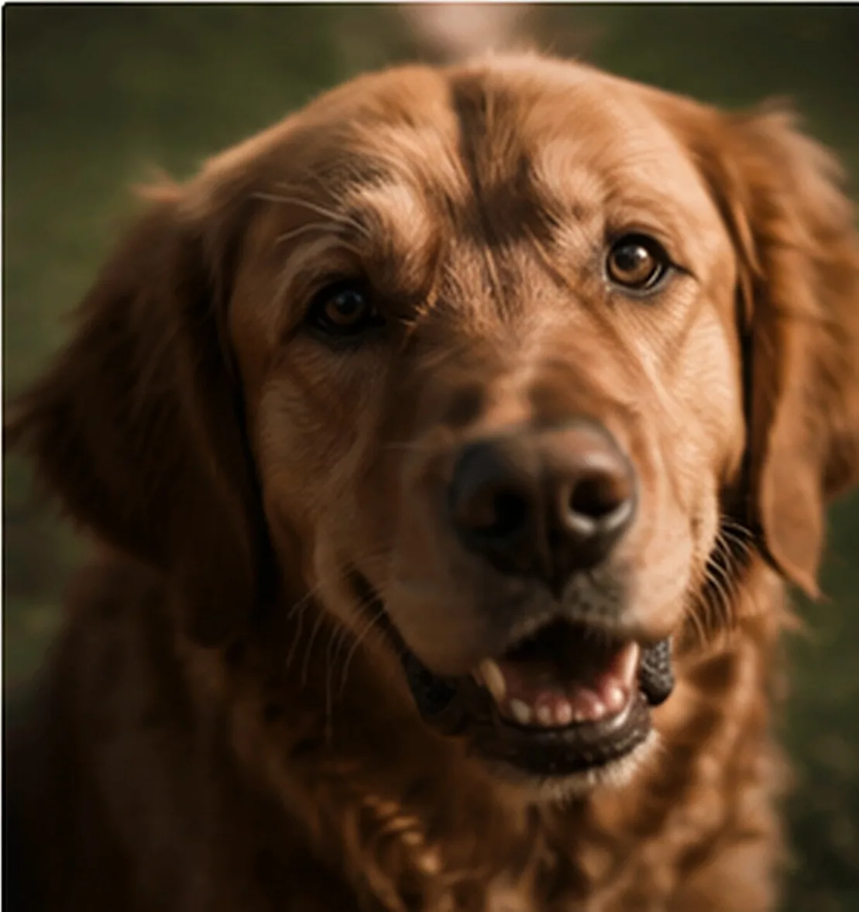
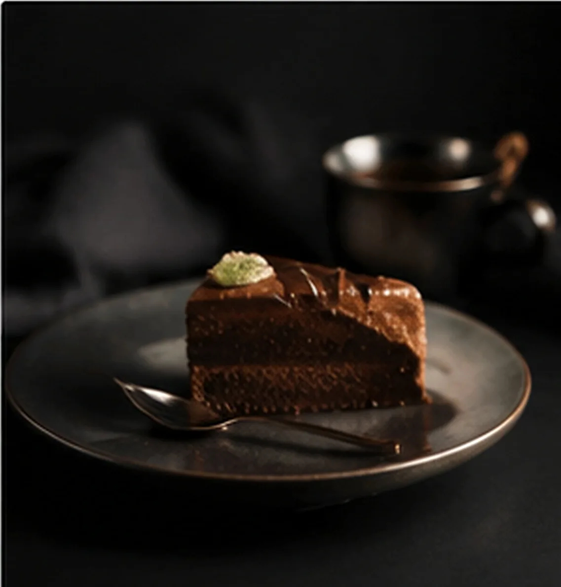

Córdoba · Fotógrafo
Fotografío lo que no se vuelve a repetir.
Retratos, parejas, mascotas, paisaje y trabajo comercial. Mirá los trabajos, elegí el tipo de sesión y escribime: coordinamos la fecha por WhatsApp.
35 mmf/1.81/250ISO 200




Sobre mí
Hace doce años que no salgo sin la cámara.
Empecé fotografiando bandas en bares de Güemes y terminé haciendo de todo: casamientos en las sierras, retratos en estudio, cartas de restaurantes, casas para inmobiliarias y perros que no se quedan quietos.
Trabajo con luz natural siempre que se pueda y con paciencia el resto del tiempo. No dirijo poses imposibles: prefiero que la sesión dure un poco más y que las fotos se parezcan a vos.
- Córdoba capitalSierras, Punilla y Calamuchita sin adicional de traslado
- Entrega en 7 a 15 díasGalería online privada, alta resolución, sin marca de agua
- Sesiones de día y de tardeLa última hora de luz es la mejor y también la más pedida



-
01
El retrato es una conversación
Nadie llega cómodo a una sesión. Los primeros veinte minutos son para charlar y que la cámara deje de existir; recién después empiezan a salir las fotos que sirven.
-
02
A los dos los fotografío como son
En parejas y casamientos no armo poses de catálogo. Los pongo a caminar, a hablar entre ellos, y disparo cuando se olvidan de que estoy. Ahí aparece la foto que después cuelgan.
-
03
Con los perros hay que tener paciencia
No hay dirección posible: hay que esperar. Reservo el doble de tiempo, dejo que se aburran de mí y en algún momento miran justo donde tienen que mirar.
-
04
Lo comercial también se cuenta
Un plato, una casa o un producto necesitan lo mismo que una persona: una idea previa y luz bien puesta. Trabajo con la carta, el ambientador o el equipo de marketing antes de disparar.
Portfolio
Una selección de lo último.
Tocá cualquier foto para verla en grande.
Todavía no hay fotos publicadas en esta categoría.
Sesiones
Elegí por dónde empezar.
Deslizá para ver todas
-
Retrato personal
Para perfil profesional, redes o simplemente porque hace años que no te sacás una foto buena. En estudio o en exteriores.
Consultar -
Parejas y casamientos
Desde una sesión de dos horas hasta la cobertura completa del día. Para casamientos armo el cronograma con ustedes una semana antes.
Consultar -
Mascotas
En tu casa o en el parque, donde esté más tranquilo. Reservo tiempo de sobra: con animales no se apura nada.
Consultar -
Gastronomía y producto
Carta completa, lanzamiento o catálogo. Se puede hacer en tu local o en estudio, con fondo neutro para e-commerce.
Consultar -
Espacios e interiores
Casas, alquileres temporarios, locales y obras terminadas. Trabajo con lente gran angular y corrección de líneas.
Consultar
Los precios dependen de la locación, la duración y la cantidad de fotos. Escribime y te paso el presupuesto exacto el mismo día.
Cómo trabajo
Tres pasos y nada más.
-
01
Charlamos
Me escribís por WhatsApp y me contás qué necesitás. Definimos fecha, locación y cuántas fotos querés. Te paso el presupuesto cerrado ese día.
-
02
La sesión
Llego media hora antes a mirar la luz. No hay apuro ni poses forzadas: si algo no está saliendo, lo repetimos hasta que salga.
-
03
La entrega
Entre 7 y 15 días te mando una galería online privada con las fotos editadas en alta, listas para imprimir o publicar. Sin marca de agua.
Lo que dicen
Tres sesiones, tres devoluciones.
Odio que me saquen fotos y terminé eligiendo veinte. Se toma el tiempo de que una se olvide de la cámara.
Nos cubrió el casamiento en Villa General Belgrano. A las 48 horas ya teníamos el adelanto y nadie lo podía creer.
Renovamos toda la carta con sus fotos. Subieron los pedidos de postres y no es casualidad.
Contacto
Contame qué tenés en mente.
La forma más rápida es WhatsApp: contesto el mismo día, casi siempre en un par de horas.
WhatsApp 351 395‑1267
- ZonaCórdoba capital y sierras · Traslados al interior a convenir
- AgendaLunes a sábado · Sesiones de mañana y de última luz
- Emailhola@jorgeespindolafoto.com